Lendário · DPS
Kakaroto Saiyajin
Dragon Ball
Especial: Genki Dama
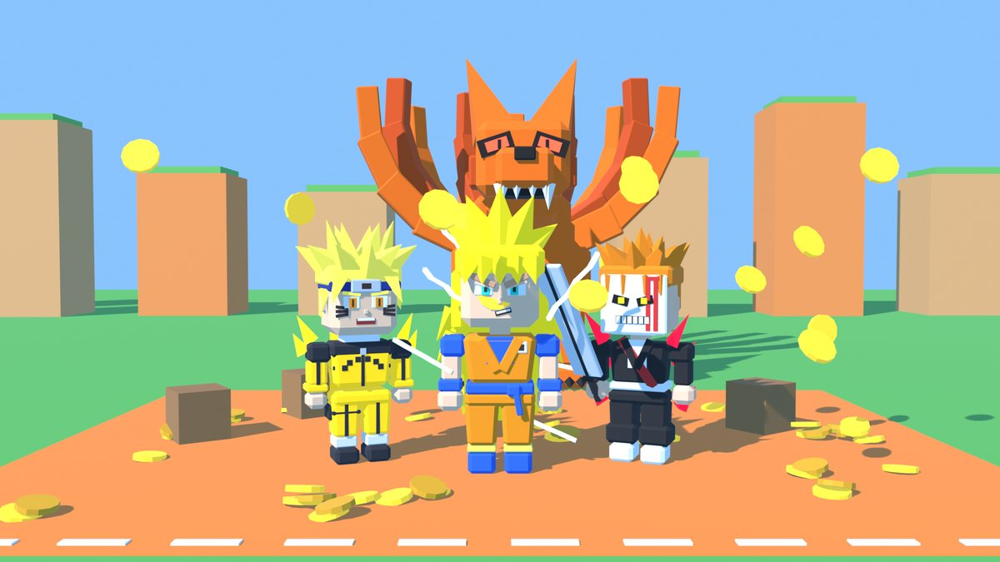
Monte sua equipe de lutadores de anime e domine o mundo.
Um mundo aberto no estilo Pet Simulator, com lutadores de anime no lugar dos pets.
Toque no personagem pra ver os golpes.
Dragon Ball
Especial: Genki Dama
Bleach
Especial: Getsuga Tenshou
One Piece
Especial: Metralhadora
+4 campeões chegando: suportes que curam e fortalecem a equipe, e um de farm.
Soldados Pó invadem o campo pra apanhar da sua equipe. De vez em quando aparece um Guardião do Dragão: bem mais forte, mas paga muito mais. Toque pra ver os golpes.
Soldadinho preto de máscara de caveira. Corta de perto.
Golpe: Corte de espada
Mesmo soldado, atira de longe.
Golpe: Rajada de tiros
O líder (Sosei Akabane no anime). Especial: dragão Orochi de energia em linha.
Especial: Dragão Orochi
Shougo Aoshima no anime, ataques de água. Especial: onda de água em volta.
Especial: Onda de água
Shinya Kiritani no anime, poderes de eletricidade. Atira de longe; especial: raios caindo nas unidades.
Especial: Chuva de raios
Chidori no anime, martelo gigante. Especial: fica gigante e bate em área com dano dobrado.
Especial: Gigante
Sesera Sakurama no anime; a Ferramenta Divina dela são as botas, e ela se regenera. Chutes rápidos; especial: se cura.
Especial: Voadora
A infestação de Soldados Pó tomou os mundos dos animes. Vá limpando área por área.
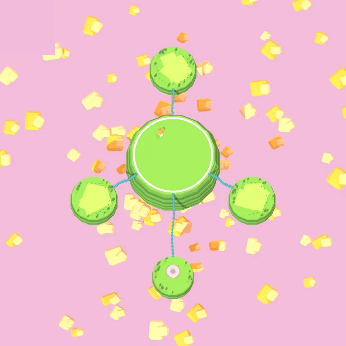
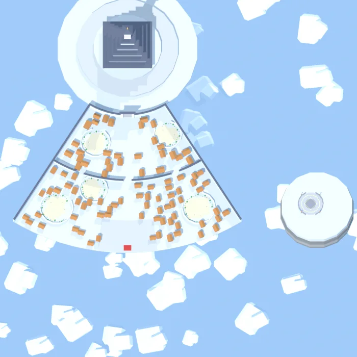
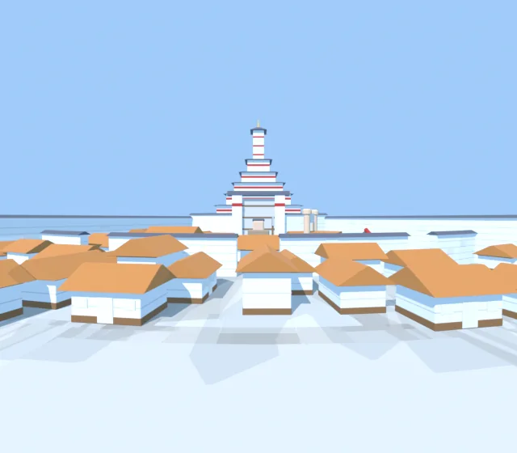
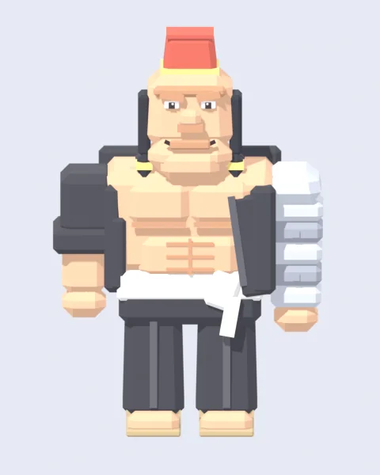
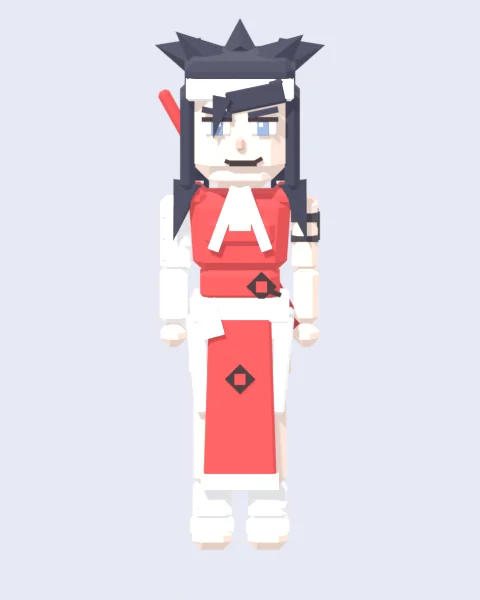
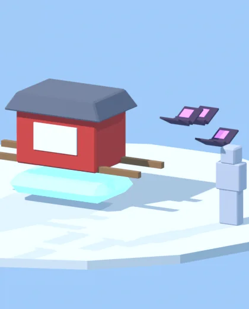
Um andar da Aincrad virou a Guilda de Aventureiros. Pegue uma missão no quadro, chame os amigos e defenda o Troféu do Campeão.
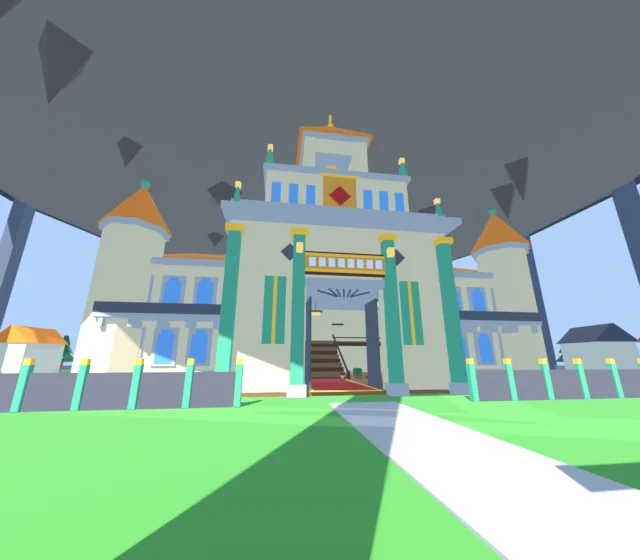
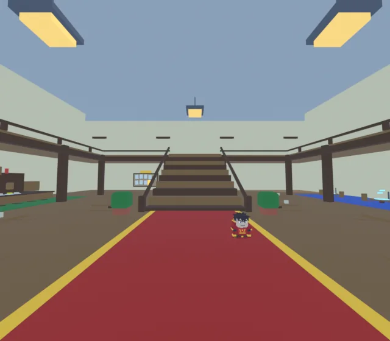
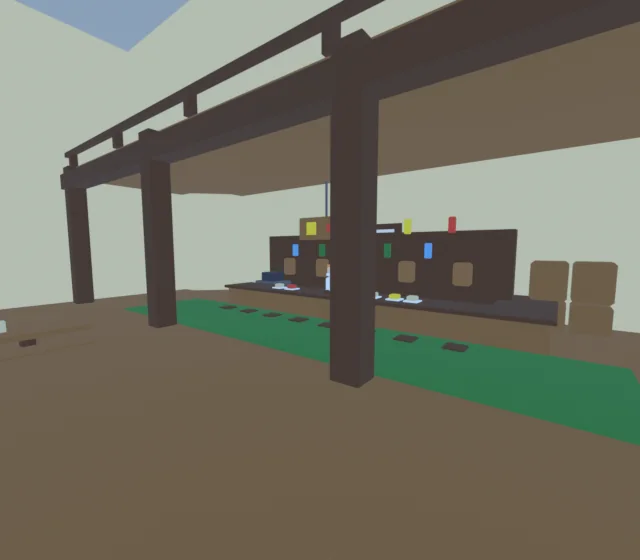
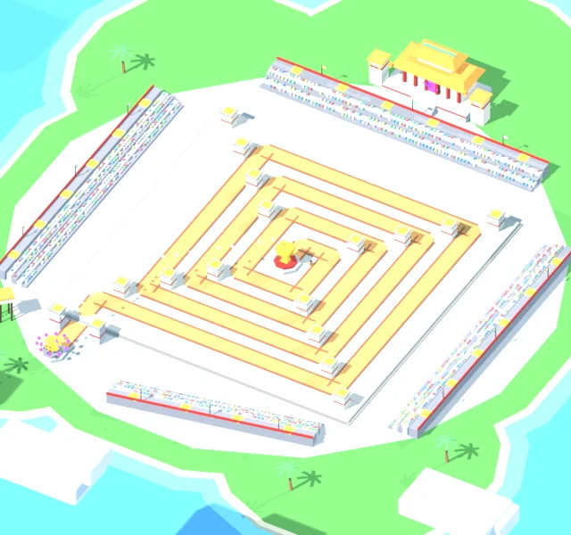
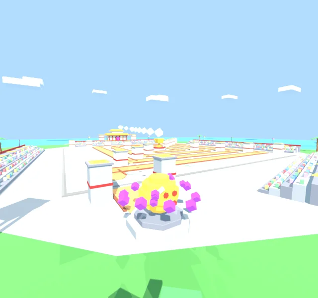
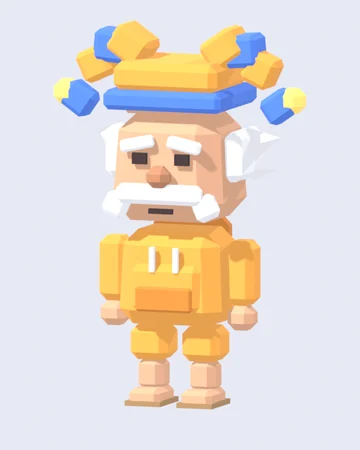
MakarovMakarov, o mestre da guilda, fica em cima do balcão do bar. Fale com ele pra ver as missões.
Um castelo voador flutua em cima do mundo. Um portal no chão leva pro jardim lá dentro, onde ficam os ajudantes.
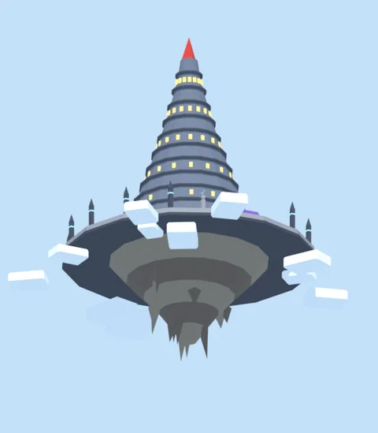
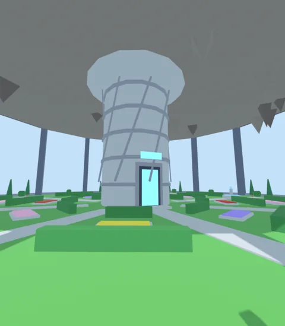
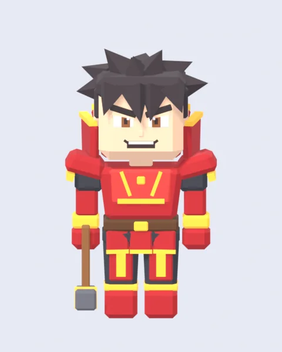
GreedFerreiro: fortalece e evolui os equipamentos.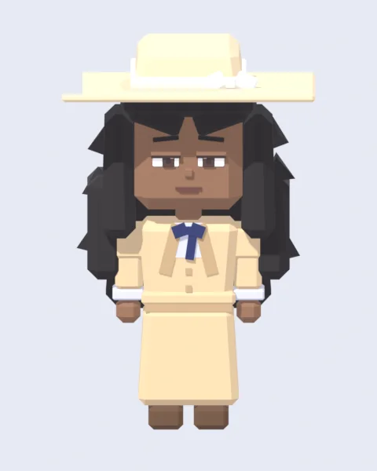
SelnerDesperta passivas raras nos seus campeões.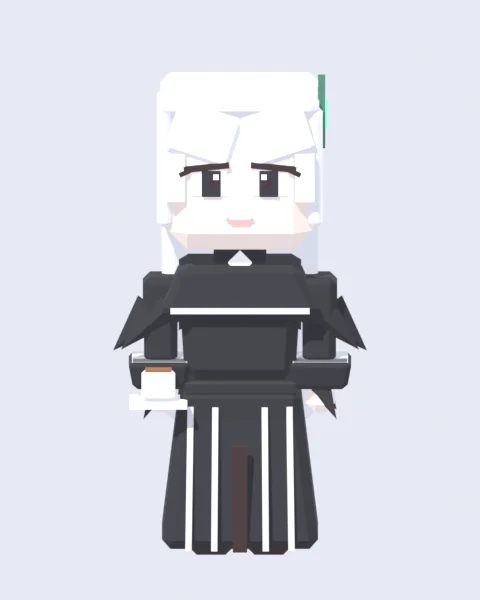
EchidnaGuarda o Livro da Sabedoria. Em breve.